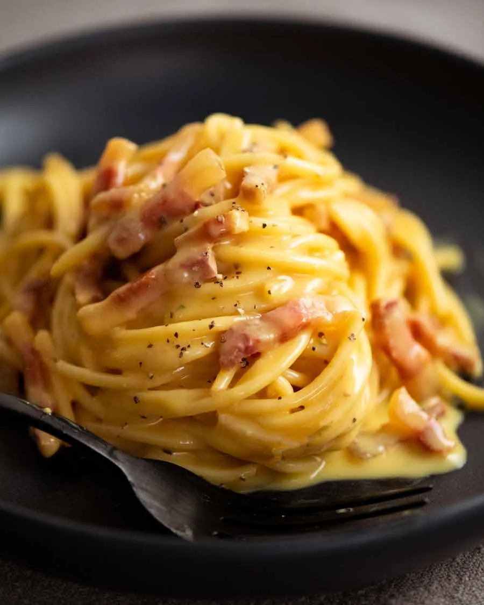

Carbonara
Carbonara

Carbonara
A traditional Italian carbonara. Rich and creamy, impress your dinner guests with this simple yet tasty recipie.
Ingredients
- Guanciale. Alternatively use bacon or pancetta if you can't get guanciale.
- 2 egg yolks
- Parmigiano reggiano cheese
- Spaghetti
- Salt and pepper
Steps
- Slice. Cut your guanciale into thick batons.
- Grate. Finely grate your cheese and set to one side.
- Whisk. Whisk together your egg yolks with the cheese and pepper in a large bowl.
- Cook pasta. Boil 4 litres of water with 1 tablespoon of salt. Cook your pasta per packet directions and reserve
1 cup of the pasta cooking water in a cup before draining.
- Cook guanciale. While the pasta is cooking, cooked your guanciale until golden brown.
- Toss pasta in guanciale. Add your hot pasta to the pan with guanciale and toss so the pasta is coated.
- Add egg and pasta water. Remove the pan from the heat and add your egg and pasta water.
- Mix. Combine the all the ingredients together and watch the sauce turn creamy.
- Serve. Serve immediately while still warm from the pan and enjoy!